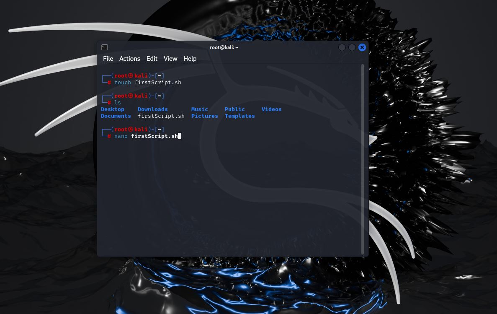
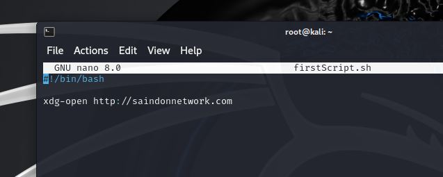
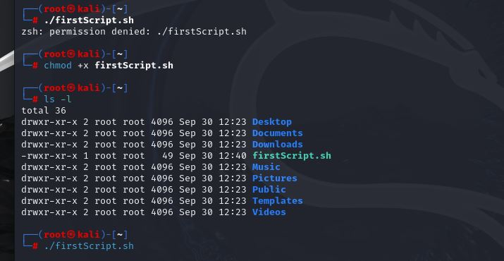
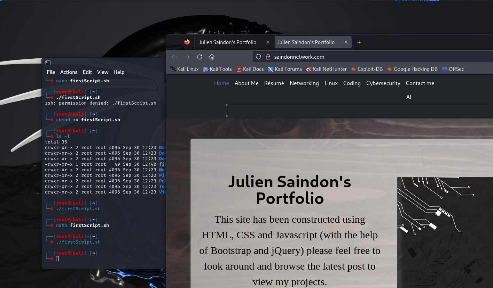

Automate with BASH scripting
Create your own script using the BASH shell
Creating scripts to automate tasks can give you a big advantage when it comes to everything form Cybersecurity to Windows task (Active Directory, Group Policy and Azure), networking automation and a lot more. Scripting can make your life more efficient, if you are willing to learn. Below is a simple BASH (Born Again Shell)script which is based on Unix-Like operating systems (that includes any Linux Distro).
- How to access the command line in Linux.
- How to use nano.
- Learn some basic BASH scripting commands.
- Create a personal script for opening your favorite websites.
Here's what you'll see
1. How to access the command line.
In order to create a BASH script and access the command line, you will have to install Linux Based OS like: Ubuntu or Kali Linux. But if you don’t want to install a full OS onto your PC or laptop, click hereLinkto learn how to deploy a Linux virtual machine using Virtual Box.
 Once you are logged in to a Linux environment, you can quickly bring up a
terminal by clicking: “ctrl+alt + t” and this will pop up your terminal.
And once you click your ethernet or wireless adapter it will start
scanning right away.
Once you are logged in to a Linux environment, you can quickly bring up a
terminal by clicking: “ctrl+alt + t” and this will pop up your terminal.
And once you click your ethernet or wireless adapter it will start
scanning right away.
2. How to use nano.
In order to create a BASH script you will have to use an editing software, Nano is a popular one. In order to create a script using nano. First you will have to create a scripting file using the “touch” command. Then, by typing "ls" you can see the image has been created in the home folder. 
Type "nano" and the name of the script and
the next screen shows when you are logged into nano, which is a
powerful text editor in Linux.
This will open the nano editor where you will write your script.
Once you are done, you will need to save and exit by toying “ctl+x” and then “enter”.
3. Learn some basic BASH scripting commands.
Here are some basic BASH scripting commands:
ECHO : this will output whatever is place between quotes
READ: this will allow for user inputs
ls: this will list a directories
cat: this will display the contents of the file
passwd: allow to change password for the logged in user
chmod: this will allow you to change the permissions of files and directories
4. Create a personal script for opening your favorite websites.
For this example, we will do a basic script that opens a web browser to your favourite website or websites. Once you are in nano, always start by typing the shebang symbols “ #!” and the location of the BASH directory “/bin/bash.  Then enter “xdg-open” and your favorite website. You can enter as many websites as you wish. Let’s say you are working on your banking for example and you could run one script that could open all of your sites that you use for you online banking needs. Once you are done, type “ctrl+x” and “y” and then “enter”.
Back to the command line, to open your script you will have to modify your permissions to open the script. Type “chmod +x” and then the name of the file. Then try again to open the script by typing “./firstScript.sh” 
Then your favorite websites will open automatically. 
Notes:
https://builtin.com/data-science/bash-commandshttps://en.wikipedia.org/wiki/Linux
https://www.youtube.com/watch?v=SPwyp2NG-bE